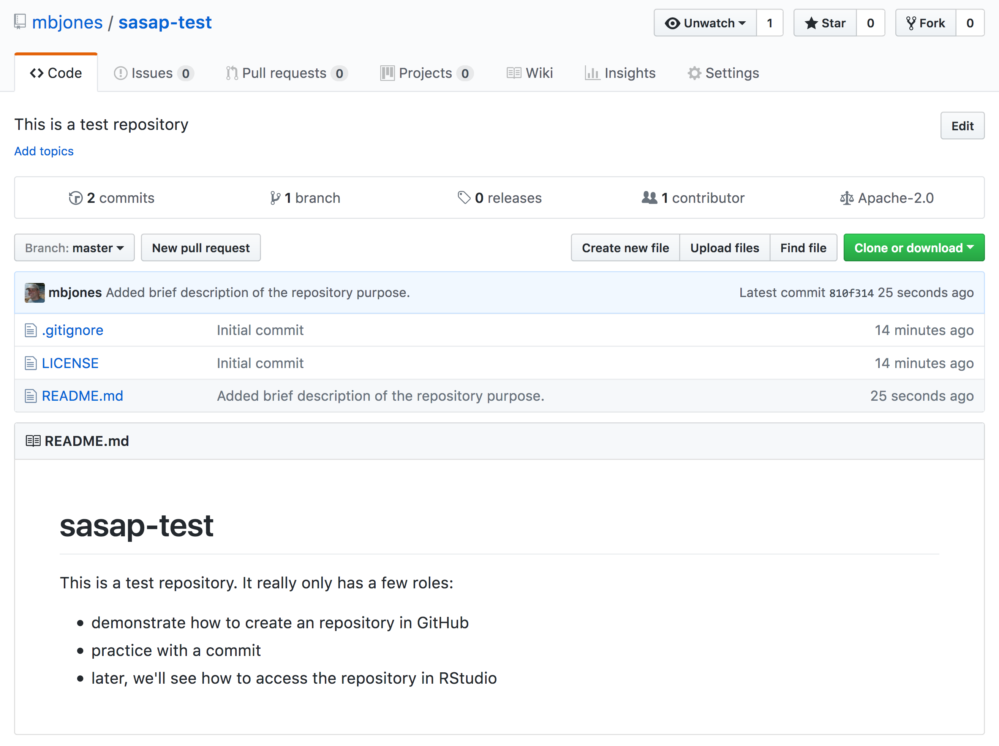
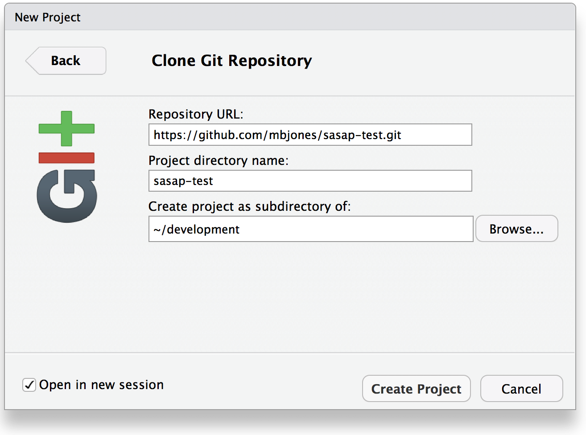
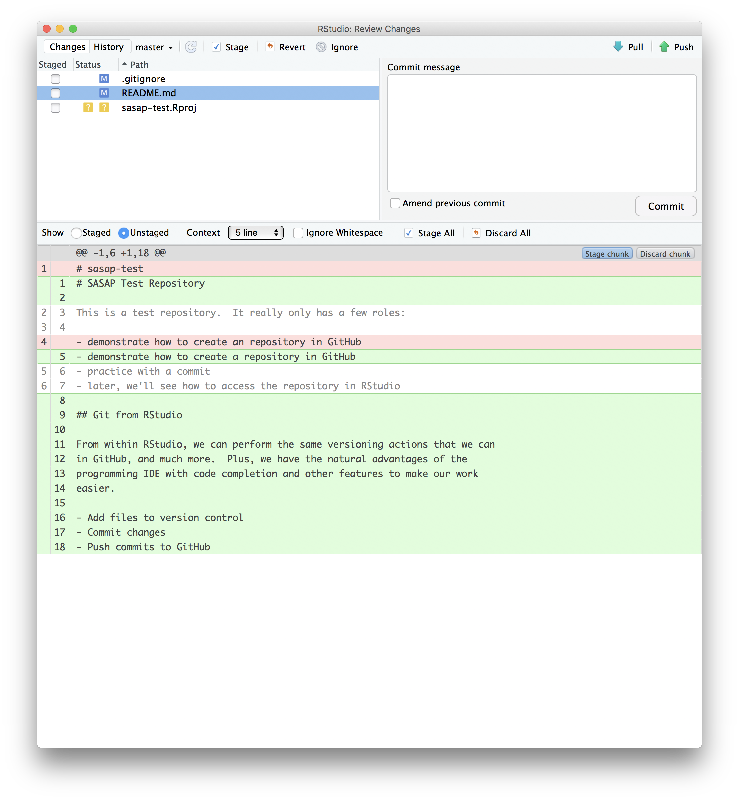

10 Version Control With git and GitHub
10.1 Learning Objectives
In this lesson, you will learn:
- Why git is useful for reproducible analysis
- How to use git to track changes to your work over time
- How to use GitHub to collaborate with others
- How to structure your commits so your changes are clear to others
- How to write effective commit messages
10.2 The problem with filenames

Every file in the scientific process changes. Manuscripts are edited. Figures get revised. Code gets fixed when problems are discovered. Data files get combined together, then errors are fixed, and then they are split and combined again. In the course of a single analysis, one can expect thousands of changes to files. And yet, all we use to track this are simplistic filenames.
You might think there is a better way, and you’d be right: version control.
Version control systems help you track all of the changes to your files, without the spaghetti mess that ensues from simple file renaming. In version control systems like git, the system tracks not just the name of the file, but also its contents, so that when contents change, it can tell you which pieces went where. It tracks which version of a file a new version came from. So its easy to draw a graph showing all of the versions of a file, like this one:

Version control systems assign an identifier to every version of every file, and track their relationships. They also allow branches in those versions, and merging those branches back into the main line of work. They also support having multiple copies on multiple computers for backup, and for collaboration. And finally, they let you tag particular versions, such that it is easy to return to a set of files exactly as they were when you tagged them. For example, the exact versions of data, code, and narrative that were used when a manuscript was submitted might be R2 in the graph above.
10.3 Version control and Collaboration using Git and GitHub
Let’s distinguish between git and GitHub:
- git: version control software used to track files in a folder (a repository)
- git creates the versioned history of a repository
- GitHub: web site that allows users to store their git repositories and share them with others

10.4 Let’s look at a GitHub repository
This screen shows the copy of a repository stored on GitHub, with its list of files, when the files and directories were last modified, and some information on who made the most recent changes.
 If we drill into the “commits” for the repository, we can see the history of changes made to all of the files. Looks like
If we drill into the “commits” for the repository, we can see the history of changes made to all of the files. Looks like kellijohnson and seananderson were fixing things in June and July:
And finally, if we drill into the changes made on June 13, we can see exactly what was changed in each file:
 Tracking these changes, how they relate to released versions of software and files is exactly what Git and GitHub are good for. And we will show how they can really be effective for tracking versions of scientific code, figures, and manuscripts to accomplish a reproducible workflow.
Tracking these changes, how they relate to released versions of software and files is exactly what Git and GitHub are good for. And we will show how they can really be effective for tracking versions of scientific code, figures, and manuscripts to accomplish a reproducible workflow.
10.5 The Git lifecycle
As a git user, you’ll need to understand the basic concepts associated with versioned sets of changes, and how they are stored and moved across repositories. Any given git repository can be cloned so that it exist both locally, and remotely. But each of these cloned repositories is simply a copy of all of the files and change history for those files, stored in git’s particular format. For our purposes, we can consider a git repository just a folder with a bunch of additional version-related metadata.
In a local git-enabled folder, the folder contains a workspace containing the current version of all files in the repository. These working files are linked to a hidden folder containing the ‘Local repository’, which contains all of the other changes made to the files, along with the version metadata.
So, when working with files using git, you can use git commands to indicate specifically which changes to the local working files should be staged for versioning (using the git add command), and when to record those changes as a version in the local repository (using the command git commit).
The remaining concepts are involved in synchronizing the changes in your local repository with changes in a remote repository. The git push command is used to send local changes up to a remote repository (possibly on GitHub), and the git pull command is used to fetch changes from a remote repository and merge them into the local repository.

git clone: to copy a whole remote repository to localgit add(stage): notify git to track particular changesgit commit: store those changes as a versiongit pull: merge changes from a remote repository to our local repositorygit push: copy changes from our local repository to a remote repositorygit status: determine the state of all files in the local repositorygit log: print the history of changes in a repository
Those seven commands are the majority of what you need to successfully use git.
But this is all super abstract, so let’s explore with some real examples.
10.6 Create a remote repository on GitHub
Let’s start by creating a repository on GitHub, then we’ll edit some files.
- Log into GitHub
- Click the New repository button
- Name it
sasap-test - Create a README.md
- Set the LICENSE to Apache 2.0
 You’ve now created your first repository! It has a couple of files that GitHub created for you, like the README.md file, and the LICENSE file, and the .gitignore file.
You’ve now created your first repository! It has a couple of files that GitHub created for you, like the README.md file, and the LICENSE file, and the .gitignore file.
For simple changes to text files, you can make edits right in the GitHub web interface. For example, navigate to the README.md file in the file listing, and edit it by clicking on the pencil icon. This is a regular Markdown file, so you can just add text, and when done, add a commit message, and hit the Commit changes button.


Congratulations, you’ve now authored your first versioned commit. If you navigate back to the GitHub page for the repository, you’ll see your commit listed there, as well as the rendered README.md file.
 Let’s point out a few things about this window. It represents a view of the repository that you created, showing all of the files in the repository so far. For each file, it shows when the file was last modified, and the commit message that was used to last change each file. This is why it is important to write good, descriptive commit messages. In addition, the blue header above the file listing shows the most recent commit, along with its commit message, and its SHA identifer. That SHA identifier is the key to this set of versioned changes. If you click on the SHA identifier (810f314), it will display the set of changes made in that particular commit.
In the next section we’ll use the GitHub URL for the GitHub repository you created to clone the repository onto your local machine so that you can edit the files in RStudio. To do so, start by copying the GitHub URL, which represents the repository location:

10.7 Working locally with Git via RStudio
RStudio knows how to work with files under version control with Git, but only if you are working within an RStudio project folder. In this next section, we will clone the repository that you created on GitHub into a local repository as an RStudio project. Here’s what we’re going to do:
- Create the new project
- Inspect the Git tab and version history
- Commit a change to the README.md file
- Commit the changes that RStudio made
- Inspect the version history
- Add and commit an Rmd file
- Push these changes to GitHub
- View the change history on GitHub
Create a New Project. Start by creating a New Project… in R Studio, select the Version Control option, and paste the GitHub URL that you copied into the field for the remote repository Repository URL. While you can name the local copy of the repository anything, its typical to use the same name as the GitHub repository to maintain the correspondence. You can choose any folder for your local copy, in my case I used my standard development folder.
 Once you hit `Create Project, a new RStudio windo will open with all of the files from the remote repository copied locally. Depending on how your version of RStudio is configured, the location and size of the panes may differ, but they should all be present, including a Git tab and the normal Files tab listing the files that had been created in the remote repository.
 You’ll note that there is one new file
You’ll note that there is one new file sasap-test.Rproj, and three files that we created earlier on GitHub (.gitignore, LICENSE, and README.md).
In the Git tab, you’ll note that two files are listed. This is the status pane that shows the current modification status of all of the files in the repository. In this case, the .gitignore file is listed as M for Modified, and sasap-test.Rproj is listed with a ? ? to indicate that the file is untracked. This means that git has not stored any versions of this file, and knows nothing about the file. As you make version control decisions in RStudio, these icons will change to reflect the current version status of each of the files.
Inspect the history. For now, let’s click on the History button in the Git tab, which will show the log of changes that occurred, and will be identical to what we viewed on GitHub. By clicking on each row of the history, you can see exactly what was added and changed in each of the two commits in this repository.
 Commit a README.md change. Next let’s make a change to the README.md file in RStudio. Add a new section, with a markdown block like this:
Commit a README.md change. Next let’s make a change to the README.md file in RStudio. Add a new section, with a markdown block like this:
## Git from RStudio
From within RStudio, we can perform the same versioning actions that we can
in GitHub, and much more. Plus, we have the natural advantages of the
programming IDE with code completion and other features to make our work
easier.
- Add files to version control
- Commit changes
- Push commits to GitHub
Once you save, you’ll immediately see the README.md file show up in the Git tab, marks as a modification. You can select the file in the Git tab, and click Diff to see the differences that you saved (but which are not yet committed to your local repository).
And here’s what the newly made changes look like compared to the original file. New lines are highlighted in green, while removed lines are in red.
 Commit the RStudio changes.
To commit the changes you made to the README.md file, check the Staged checkbox next to the file (which tells Git which changes you want included in the commit), then provide a descriptive Commit message, and then click Commit.

Note that some of the changes in the repository, namely .gitignore and sasap-test.Rproj are still listed as having not been committed. This means there are still pending changes to the repository. You can also see the note that says:
Your branch is ahead of ‘origin/master’ by 1 commit.
This means that we have committed 1 change in the local repository, but that commit has not yet been pushed up to the origin repository, where origin is the typical name for our remote repository on GitHub. So, let’s commit the remaining project files by staging them and adding a commit message.

When finished, you’ll see that no changes remain in the Git tab, and the repository is clean.
Inspect the history. Note that the message now says:
Your branch is ahead of ‘origin/master’ by 2 commits.
These 2 commits are the two we just made, and have not yet been pushed to GitHub. By clicking on the History button, we can see that there are now a total of four commits in the local repository (while there had only been two on GitHub).

Push these changes to GitHub. Now that everything has been changed as desired locally, you can push the changes to GitHub using the Push button. This will prompt you for your GitHub username and password, and upload the changes, leaving your repository in a totally clean and synchronized state. When finished, looking at the history shows all four commits, including the two that were done on GitHub and the two that were done locally on RStudio.
 And note that the labels indicate that both the local repository (
And note that the labels indicate that both the local repository (HEAD) and the remote repository (origin/HEAD) are pointing at the same version in the history. So, if we go look at the commit history on GitHub, all the commits will be shown there as well.
10.8 On good commit messages
Clearly, good documentation of what you’ve done is critical to making the version history of your repository meaningful and helpful. Its tempting to skip the commit message altogether, or to add some stock blurd like ‘Updates’. Its better to use messages that will be helpful to your future self in deducing not just what you did, but why you did it. Also, commit messaged are best understood if they follow the active verb convention. For example, you can see that my commit messages all started with a past tense verb, and then explained what was changed.
While some of the changes we illustrated here were simple and so easily explained in a short phrase, for more complext changes, its best to provide a more complete message. The convention, however, is to always have a short, terse first sentence, followed by a more verbose explanation of the details and rationale for the change. This keeps the high level details readable in the version log. I can’t count the number of times I’ve looked at the commit log from 2, 3, or 10 years prior and been so grateful for diligence of my past self and collaborators.
10.9 Collaboration and conflict free workflows
Up to now, we have been focused on using Git and GitHub for yourself, which is a great use. But equally powerful is to share a GitHib repository with other researchers so that you can work on code, analyses, and models together. When working together, you will need to pay careful attention to the state of the remote repository to avoid and handle merge conflicts. A merge conflict occurs when two collaborators make two separate commits that change the same lines of the same file. When this happens, git can’t merge the changes together automatically, and will give you back an error asking you to resolve the conflict. Don’t be afraid of merge conflicts, they are pretty easy to handle. and there are some great guides.
That said, its truly painless if you can avoid merge conflicts in the first place. You can minimize conflicts by:
- Ensure that you pull down changes just before you commit
- Ensures that you have the most recent changes
- But you may have to fix your code if conflict would have occurred
- Coordinate with your collaborators on who is touching which files
- You still need to comunicate to collaborate
10.10 Exercise
Use RStudio to add a new RMarkdown file to your sasap-test repository, build a basic structure for the file, and then save it.
Next, stage and commit the file locally, and push it up to GitHub.
10.11 Advanced topics
There’s a lot we haven’t covered in this brief tutorial. There are some great and much longer tutorials that cover advanced topics, such as:
- Using git on the command line
- Resolving conflicts
- Branching and merging
- Pull requests versus direct contributions for collaboration
- Using .gitignore to protect sensitive data
- GitHub Issues and why they are useful
and much, much more
- Try Git is a great interactive tutorial
- Software Carpentry Version Control with Git
Codecademy Learn Git (some paid)